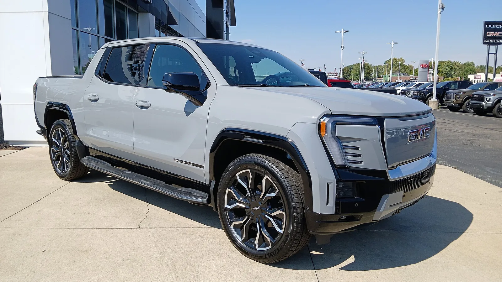
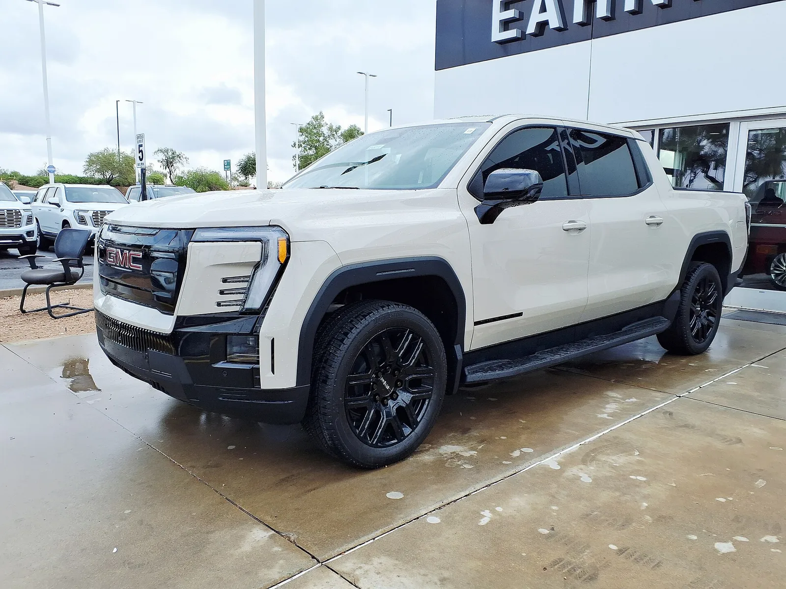

▲ 쉐보레 실버라도 EV. 이번 리콜은 주행용 휠이 아니라 스페어 휠이 대상이다
리콜 소식에서 '휠 결함'이라는 말을 보면 대개 주행 중 위험을 떠올립니다.
그런데 이번 GM 리콜은 대상이 다릅니다.
문제가 된 건 트렁크에 실려 있는 스페어 휠입니다. 굴러가는 네 짝이 아닙니다. 그래서 위험의 성격도 달라집니다.
1. 무엇이 문제인가
대상은 2026년형 쉐보레 실버라도 EV와 GMC 시에라 EV입니다. 두 차는 GM의 얼티엄 기반 전기 픽업으로, 기본 구조를 공유합니다.
결함은 스페어 휠에 있습니다. 특정 생산 로트에서 만들어진 스틸 휠이 균열될 수 있다는 것입니다.

▲ GMC 시에라 EV. 실버라도 EV와 기본 구조를 공유해 함께 대상에 올랐다 ⓒ Wikimedia Commons
📍 발단은 공급사의 시험이었다
이 문제는 사고 신고에서 시작된 것이 아니라, 휠 공급사가 진행하던 피로 시험에서 드러났습니다. 반복 하중을 거는 시험에서 특정 로트의 휠이 기준에 못 미친 것입니다. 결함이 도로에서 발현되기 전에 공정 단계에서 잡힌 사례입니다.
2. 주행용 휠과 무엇이 다른가
스페어 휠은 평소에 하중을 받지 않습니다. 트렁크나 차체 하부에 고정돼 있을 뿐입니다. 그래서 지금 당장 주행 중에 바퀴가 깨질 위험은 아닙니다.
대신 위험은 시점이 옮겨집니다.
| 상황 | 왜 문제인가 |
|---|---|
| 펑크가 나서 교체했을 때 | 이미 비상 상황인데 대체품이 온전하지 않다 |
| 갓길·고속도로 | 가장 위험한 장소에서 다시 문제가 생길 수 있다 |
| 장거리·오지 | 주변에 정비소가 없을 때 유일한 수단이다 |
즉 위험의 확률은 낮지만, 발생하는 상황이 하필 최악입니다. 스페어 부품이라고 가볍게 볼 수 없는 이유입니다.

▲ 펑크나 손상은 예고 없이 온다. 그때 꺼내 쓰는 것이 스페어다 ⓒ Wikimedia Commons
3. 조치
| 항목 | 내용 |
|---|---|
| 캠페인 번호 | N262556920 |
| 조치 | 딜러가 스페어 휠을 점검하고, 해당 생산 로트면 교체 |
| 비용 | 무상 |
| 특징 | 전량 교체가 아니라 로트 확인 후 선별 교체 |
전량 교체가 아니라는 점이 이번 리콜의 성격을 보여줍니다. 문제가 된 것은 설계가 아니라 특정 시기에 만들어진 물량이기 때문입니다.
4. 전기 픽업의 무게라는 배경
전기 픽업은 무겁습니다. 대용량 배터리가 바닥에 깔리기 때문입니다. 실버라도 EV와 시에라 EV는 내연기관 픽업보다 훨씬 무거운 축에 듭니다.

▲ 전기 픽업은 배터리 탓에 무겁다. 휠에 걸리는 하중 조건도 그만큼 까다로워진다 ⓒ Wikimedia Commons
무게는 휠에 걸리는 하중 조건을 그대로 끌어올립니다. 같은 규격이라도 전기 픽업용 휠은 더 엄격한 기준을 통과해야 합니다. 공급사의 피로 시험에서 걸러진 것도 이런 맥락입니다.
전동화가 부품 기준을 다시 쓰게 만드는 사례로 볼 만합니다. 차가 무거워지면 브레이크, 타이어, 휠, 서스펜션의 요구 조건이 연쇄적으로 올라갑니다.
5. 국내와의 관계
실버라도 EV와 시에라 EV는 국내에 출시되지 않았습니다. 국내에서 이 리콜의 직접 대상이 되는 차는 없습니다.
다만 참고할 지점은 있습니다. 스페어 타이어는 평소 확인하지 않는 부품입니다. 리콜과 무관하게도 공기압이 빠져 있거나 고정 브래킷이 녹슨 채 방치된 경우가 많습니다.
✅ 스페어 타이어가 있는 차라면
· 공기압을 1년에 한 번은 확인 — 쓰려는 순간 비어 있는 경우가 흔합니다
· 고정 볼트와 브래킷의 부식 확인
· 잭과 렌치가 실려 있는지 확인 — 세차나 정비 후 빠져 있기도 합니다
· 도넛형 임시 타이어는 속도·거리 제한이 있습니다
6. 정리
GM이 2026년형 실버라도 EV와 시에라 EV의 스페어 휠을 리콜합니다. 특정 생산 로트의 스틸 휠이 균열될 수 있다는 것이 사유이며, 캠페인 번호는 N262556920입니다.
주행용 휠은 대상이 아닙니다. 대신 펑크가 나서 스페어를 꺼내 쓰는 순간에 문제가 될 수 있습니다.
두 차종 모두 국내에는 판매되지 않았습니다. 다만 스페어 타이어는 어느 차든 평소 확인이 잘 안 되는 부품이라, 이번 기회에 한 번 열어볼 만합니다.